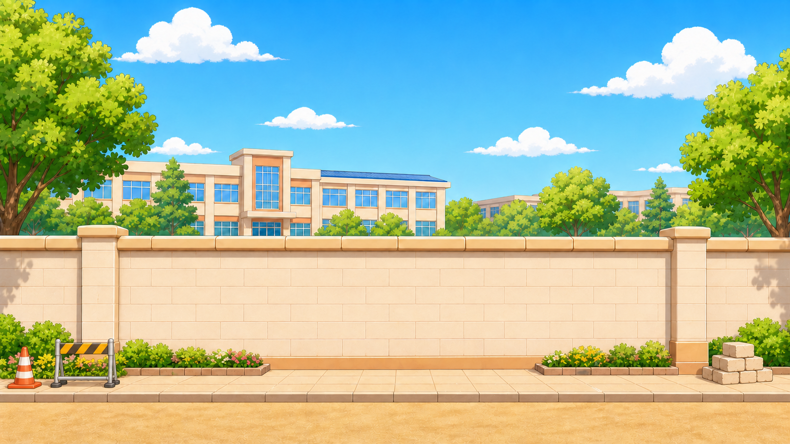
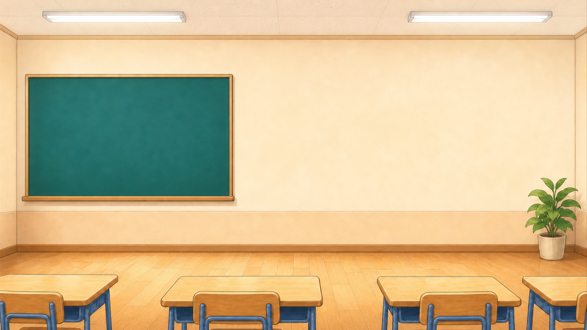
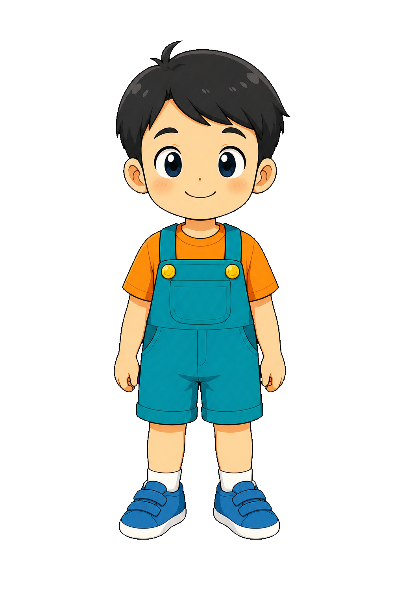
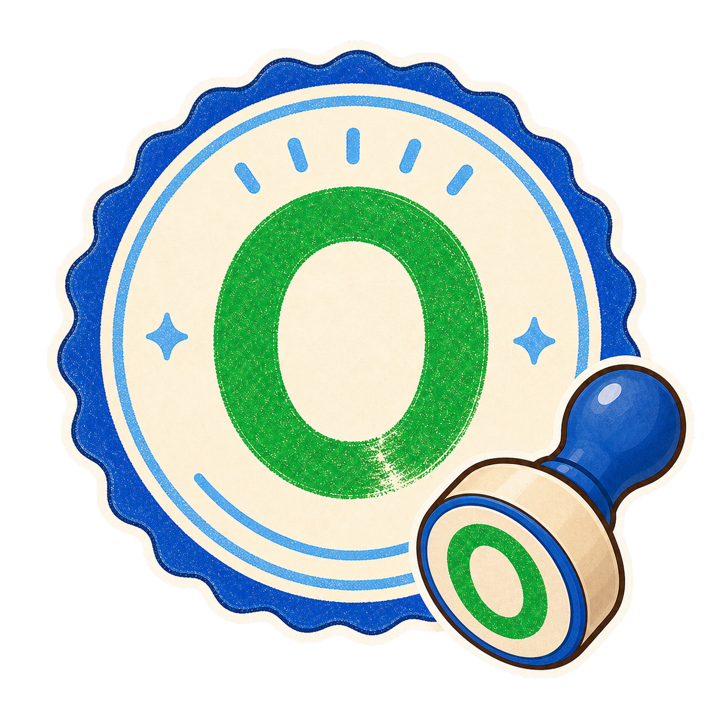
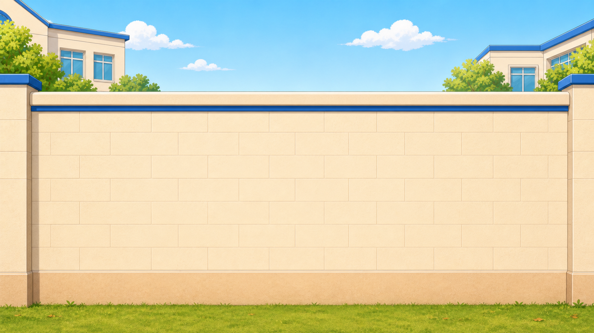
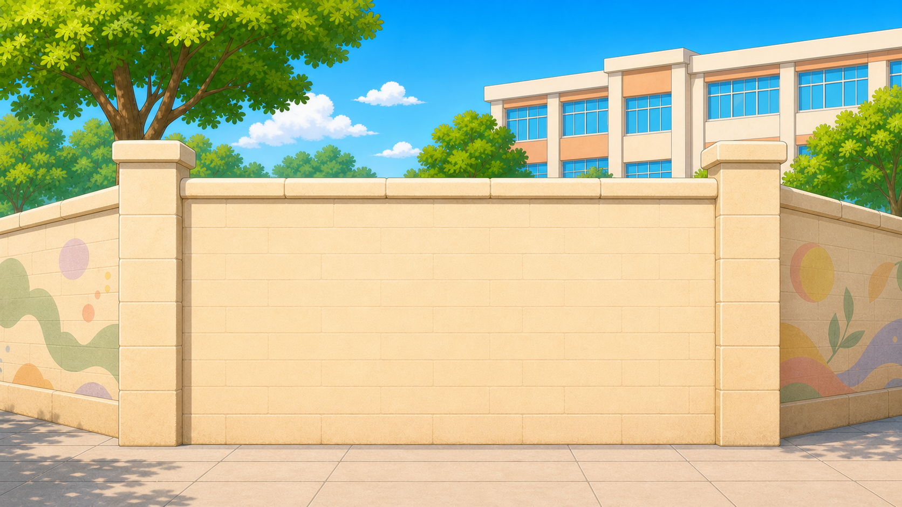
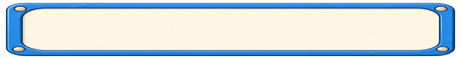

알록달록, 학교 담장 색칠하기




여러 가지 모양으로 그리면 좋겠어요.



세 수의 덧셈과 뺄셈
①페인트 소개는 저희가 할게요.
②이것을 페인트라고 해요.
초록색부터 알려드릴게요.
②이것을 페인트라고 해요.
초록색부터 알려드릴게요.



덧셈과 뺄셈10이 되는 덧셈식을 찾아 보세요.


무작위 문제A
‘10이 되는 덧셈
찾기’
문제의 정답 보기는 3개씩 제시
1. 정답) A + B = 10
2. 오답) A + 무작위 (B 제외)
*생성 규칙: A + B = 10
( A: 1~9 무작위 수 / B= 10 – A )
문제 예시
예) 6+3=10, 6+4=10, 6+5=10
‘10이 되는 덧셈
찾기’
문제의 정답 보기는 3개씩 제시
1. 정답) A + B = 10
2. 오답) A + 무작위 (B 제외)
*생성 규칙: A + B = 10
( A: 1~9 무작위 수 / B= 10 – A )
문제 예시
예) 6+3=10, 6+4=10, 6+5=10


담장 색칠이 끝나가요!
그림을 완성했나요?
수리 이야기
모양을 길에서 본 적이 있나요?